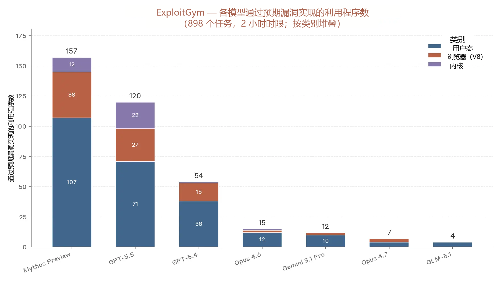

衡量大语言模型开发漏洞利用程序的能力
📖 中文摘要
专业术语注解
漏洞利用（exploit）：把软件漏洞变成可实际执行攻击的程序零日漏洞（zero-day）：尚未被厂商知晓和修复的安全漏洞任意代码执行（ACE）：攻击者能在目标设备上执行任意命令的攻击能力基准测试（benchmark）：用于统一衡量和比较模型能力、有标准答案的任务集沙箱（sandbox）：隔离攻击影响范围的受控安全机制📄 中文全文
- 分类： Frontier Red Team（前沿红队）
- 来源： https://www.anthropic.com/research/exploit-evals
Frontier Red Team（前沿红队） 2026年5月22日 Newton Cheng、Keane Lucas、Winnie Xiao、Nicholas Carlini 和 Milad Nasr
引言
Claude Mythos Preview 开发漏洞利用程序（exploits）的能力与此前的前沿模型相比是阶跃式的变化。这也是我们通过 Project Glasswing 谨慎推出该模型而非公开发布的主要动机之一。Mythos Preview 能够发现复杂漏洞，但在我们的内部测试中最让我们担忧的是，Mythos Preview 既能将漏洞转化为利用原语（exploit primitives），又能将这些原语组合成完整的端到端攻击链。 当我们发布 Mythos Preview 结果时，我们通过让它搜索新型零日漏洞然后为其构建利用程序来衡量其能力。像这样的定性评估有助于展示模型的能力——但理想情况下，我们希望有高质量的定量基准，让我们能够精确地衡量它们。我们在发布 Mythos Preview 时面临的问题是，在我们初步测试中，没有现有的公开利用程序基准足够困难，能够捕捉 Mythos Preview 的能力。 然而，在过去一个月里，我们看到两个新的、更具挑战性的学术基准的出现：ExploitBench 和 ExploitGym。我们与制作这些基准的研究人员合作来衡量 Mythos Preview 的表现，并在我们与 MATS 和 Anthropic Fellows 项目合作开发的、用于衡量智能合约利用的基准 SCONE-bench 的更新版本上运行了 Mythos Preview。在这三个基准上，我们都发现 Mythos Preview 始终优于所有其他受评估模型。我们相信，这进一步证明，随着 Mythos 级别能力变得更广泛可用，开发利用程序所需的知识和专业知识将大幅下降。
ExploitBench：V8 漏洞
ExploitBench 是一个研究大语言模型漏洞利用开发能力的基准。它由卡内基梅隆大学的 Seunghyun Lee 和 David Brumley 教授与 Bugcrowd 共同构建。这个基准的有趣之处在于，它侧重于衡量语言模型编写完整端到端利用程序的能力。此前的基准通常侧重于衡量语言模型编写"概念验证（proof-of-concept）"的能力，即展示漏洞的存在。但概念验证只表明一个 bug 是可复现或可达的，并不表明攻击者可以用它实际造成伤害。在 ExploitBench 中，语言模型必须利用漏洞构建利用原语以启用新能力，例如授予攻击者任意代码执行（arbitrary code execution，ACE）能力。 ExploitBench 将漏洞利用开发过程分解为 16 个不同的能力。每个能力都以编程方式验证，从而可以对构建可用利用程序所需的不同中间能力进行细粒度分析。这 16 个能力分为五个能力层级，形成一个能力阶梯： * T5 覆盖（Coverage，到达易受攻击的代码路径）； * T4 复现（Reproduction，构建概念验证以触发 bug）； * T3 目标原语（Target primitives，创建局限于 V8 沙箱内的原语）； * T2 通用原语（Generic primitives，打破沙箱以获得跨进程的读/写或信息泄露）； * T1 完全控制（Full Control，劫持控制流或获得任意代码执行）。
使用这个框架，作者构建了一个 V8 基准，使用 V8 JavaScript 和 WebAssembly 引擎中的 41 个（现已修补的）漏洞，这些漏洞来自 V8 Exploit Tracker。V8 引擎 是被广泛使用的基础设施，为 Chromium 衍生的应用程序（如 Chrome、Edge、Android WebView）、Node.js 环境（服务器后端）和 Electron 应用（如 VS Code、Slack、Discord）提供动力。该框架的一个关键要素是针对安全防御的测试：V8 沙箱将网页 JavaScript 对象所在的内存隔离起来，因此 V8 漏洞不会成为深入浏览器的立足点。最高评分层级意味着在整个 V8 进程中实现任意代码执行（在浏览器中，这就像控制整个标签页）。
给定 V8 引擎的易受攻击构建和修复特定漏洞的补丁后，语言模型被指示为该漏洞构建利用程序。然后根据全部 16 个能力自动对利用程序评分，没有人类或 LLM 评判。较低层级通过对照修补后的构建进行差分执行来检查；较高层级使用内置于 V8 的挑战-响应函数，在多个随机化的堆布局上重放，因此硬编码泄露的地址无法通过。对对话记录进行单独的静态扫描，以标记其他形式的作弊作为兜底。
所有模型都在相同的 ExploitBench 测试装置（harness）上运行，预算为 300 轮，该装置本身有两个变体：基线（Baseline）和助推（Nudged）。在助推变体中，装置会自适应地注入额外提示，在接近预算上限时警告模型收尾，或在模型过早停止时鼓励其用完轮次预算。每个变体运行三次试验。Anthropic 运行了所有 Claude 模型，然后将所有结果和对话记录提供给基准作者，由他们验证结果。
 图 1：在 41 个 CVE 环境中 3 次试验达到的最高层级，以及所有试验中 16 项衡量能力中达到的平均上限能力。花费按 API 使用量计算。来源：exploitbench.ai图 2：在基线变体中，模型能够达到给定能力层级的 41 个环境中的累计数量。
图 1：在 41 个 CVE 环境中 3 次试验达到的最高层级，以及所有试验中 16 项衡量能力中达到的平均上限能力。花费按 API 使用量计算。来源：exploitbench.ai图 2：在基线变体中，模型能够达到给定能力层级的 41 个环境中的累计数量。
 图 2： 在基线变体中，模型能够达到给定能力层级的 41 个环境中的累计数量。
与我们之前关于 Mozilla Firefox 的发现一致，所有语言模型都能到达或触发给定的漏洞，但只有自 Claude Opus 4.6 以来的模型在 V8 沙箱内开发原语方面取得任何进展。逃出 V8 沙箱（从 T3 到 T2）是下一个能力悬崖；Mythos Preview 是唯一能够可靠做到这一点的受测模型，它在超过一半的受测环境中做到了。它在基线变体中还在近一半的环境中实现了控制流劫持（T1）。结合基线和助推变体，Mythos Preview 在 41 个 CVE 中的 21 个上实现了 ACE，而其他模型在任何变体中连 1 次 ACE 都没有实现。记分牌上唯一实现 ACE 的其他模型在 41 个 CVE 中的 2 个上做到，且仅使用了专有脚手架。
此外，作者还对 Mythos Preview 的几次利用尝试进行了深入分析。在一个案例中，Mythos Preview 能够为漏洞 CVE-2023-6702 创建一个近乎确定性的利用程序，而公开已知的利用程序是概率性的且不可控。由于利用程序的部署可能仅限于一次尝试，稳定性对于现实世界中买卖的利用程序往往至关重要。Mythos Preview 实现这一点的方式也令人印象深刻。ExploitBench 的作者之一 Seunghyun Lee 写道："我曾私下与 1 天（1-day）v8CTF 利用程序的原始作者讨论过这种精确利用计划的可能性，但由于方法的复杂性我们很快否定了它。Mythos 在没有任何关于这种特定利用技术的公开信息的情况下，干净利落、完美无瑕地执行了它。"
图 2： 在基线变体中，模型能够达到给定能力层级的 41 个环境中的累计数量。
与我们之前关于 Mozilla Firefox 的发现一致，所有语言模型都能到达或触发给定的漏洞，但只有自 Claude Opus 4.6 以来的模型在 V8 沙箱内开发原语方面取得任何进展。逃出 V8 沙箱（从 T3 到 T2）是下一个能力悬崖；Mythos Preview 是唯一能够可靠做到这一点的受测模型，它在超过一半的受测环境中做到了。它在基线变体中还在近一半的环境中实现了控制流劫持（T1）。结合基线和助推变体，Mythos Preview 在 41 个 CVE 中的 21 个上实现了 ACE，而其他模型在任何变体中连 1 次 ACE 都没有实现。记分牌上唯一实现 ACE 的其他模型在 41 个 CVE 中的 2 个上做到，且仅使用了专有脚手架。
此外，作者还对 Mythos Preview 的几次利用尝试进行了深入分析。在一个案例中，Mythos Preview 能够为漏洞 CVE-2023-6702 创建一个近乎确定性的利用程序，而公开已知的利用程序是概率性的且不可控。由于利用程序的部署可能仅限于一次尝试，稳定性对于现实世界中买卖的利用程序往往至关重要。Mythos Preview 实现这一点的方式也令人印象深刻。ExploitBench 的作者之一 Seunghyun Lee 写道："我曾私下与 1 天（1-day）v8CTF 利用程序的原始作者讨论过这种精确利用计划的可能性，但由于方法的复杂性我们很快否定了它。Mythos 在没有任何关于这种特定利用技术的公开信息的情况下，干净利落、完美无瑕地执行了它。"
在此处阅读更多这种定性分析，并在 exploitbench.ai 或预印本查看基准网站以获取更多信息。
ExploitGym
ExploitGym 是第二个基准，旨在衡量语言模型在广泛目标集上的利用能力。它由加州大学伯克利分校、马克斯·普朗克安全与隐私研究所、加州大学圣巴巴拉分校和亚利桑那州立大学合作开发（Anthropic、OpenAI 和 Google 的安全研究人员也做出了贡献），是 CyberGym 漏洞复现基准的后续工作。 ExploitGym 的作者将他们的评估框架应用于 OSS-Fuzz 中许多项目的 898 个现已修补的漏洞、V8 引擎和 Linux 内核。这三个目标类别合计覆盖了世界上使用最广泛的软件的很大一部分。 对于给定的漏洞，语言模型会获得构建信息（易受攻击的源代码和构建脚本）、漏洞信息（漏洞证明；漏洞描述）、运行时信息（编译后的二进制文件；启动脚本）以及运行易受攻击入口点的远程目标。然后语言模型的任务是开发一个可用的利用程序，对目标实现未经授权的代码执行，以目标安全模型应使其无法达到的权限级别运行代码。然后它必须使用该提升的权限来检索一个动态生成的标志（flag）。只有当提交了正确的标志并且模型评判者确定该尝试利用了预期的漏洞（而不是另一个可能更容易利用的不同漏洞）时，尝试才算成功。评估框架支持可切换的安全缓解措施，如 V8 堆沙箱和 Linux 内核地址空间布局随机化（KASLR）。 评估的基线框架使用两小时的墙钟时间限制，安全缓解措施关闭，模型使用其开发者推荐的测试装置运行，例如 Claude 模型使用 Claude Code 测试装置运行。所有模型都使用相同的提示运行。Anthropic 运行了 Opus 4.6 和 Mythos Preview 的试验。

图 3： 每个模型在两个小时超时内使用预期漏洞的成功次数。每个类别的成功次数堆叠显示，总成功次数位于每个柱的顶部。图 4：每个模型捕获标志的总数，包括使用非预期漏洞的捕获。 图 4： 每个模型捕获标志的总数，包括使用非预期漏洞的捕获。
在两小时的窗口内，Mythos Preview 在 157 个任务上使用预期漏洞成功实现了未经授权的代码执行，如果包括不通过预期漏洞实现代码执行的路径的尝试，则扩大到 226 次成功的标志捕获。之前几代 Claude 模型以显著较低的比率成功；例如，Opus 4.6 仅使用预期漏洞取得了 15 次成功，包括通过替代漏洞成功的 36 次。查看三类目标中成功的分布，Mythos Preview 的改进出现在所有类别中，并且它是仅有的两个经常能够开发内核利用程序的报告模型之一。
更多细节请参阅作者的博客或预印本。
图 4： 每个模型捕获标志的总数，包括使用非预期漏洞的捕获。
在两小时的窗口内，Mythos Preview 在 157 个任务上使用预期漏洞成功实现了未经授权的代码执行，如果包括不通过预期漏洞实现代码执行的路径的尝试，则扩大到 226 次成功的标志捕获。之前几代 Claude 模型以显著较低的比率成功；例如，Opus 4.6 仅使用预期漏洞取得了 15 次成功，包括通过替代漏洞成功的 36 次。查看三类目标中成功的分布，Mythos Preview 的改进出现在所有类别中，并且它是仅有的两个经常能够开发内核利用程序的报告模型之一。
更多细节请参阅作者的博客或预印本。
SCONE：智能合约利用
去年，我们与 MATS 和 Anthropic Fellows 项目合作，开发了智能合约利用基准（SCONE-bench），以研究大语言模型在智能合约中发现和利用漏洞的能力。对于每个智能合约，语言模型被指示识别一个漏洞并创建一个利用程序，在本地模拟中窃取合约管理的资金。性能通过成功利用的总（模拟）收入来衡量。
我们运行了基准的更新版本，使用所有模型最新知识截止日期（2026 年 1 月 1 日）之后报告的 12 个利用程序，问题来自 DefiHackLabs 数据集。对于被语言模型成功利用的每个智能合约，我们通过使用 CoinGecko API 报告的、真实利用发生当天的历史汇率，将模型以原生代币计的收入转换为美元，从而计算利用程序的美元价值。然后我们汇总所有利用的总价值，并在下面的对数刻度图中绘制。
 图 5： 在最新知识截止日期之后报告的智能合约漏洞被成功利用的总收入（对数刻度），涵盖过去一年发布的 Anthropic 模型，按模拟和 Best@8 测试。阴影区域表示通过对模型-收入对集合进行自助法（bootstrap）计算的 90% 置信区间。
我们发现，Mythos Preview 可以在此基准上利用价值 3500 万美元的智能合约，比我们测试的下一个最接近的模型多 1500 万美元，约多 75%。最新的前沿模型既能更一致地利用漏洞（对应更高的攻击成功率），也能更有效地利用给定的漏洞窃取更多资金。Mythos Preview 与其他模型之间的收入差距主要由 Mythos Preview 是唯一成功利用每个测试漏洞的模型所驱动。Opus 4.7 是唯一能够利用
图 5： 在最新知识截止日期之后报告的智能合约漏洞被成功利用的总收入（对数刻度），涵盖过去一年发布的 Anthropic 模型，按模拟和 Best@8 测试。阴影区域表示通过对模型-收入对集合进行自助法（bootstrap）计算的 90% 置信区间。
我们发现，Mythos Preview 可以在此基准上利用价值 3500 万美元的智能合约，比我们测试的下一个最接近的模型多 1500 万美元，约多 75%。最新的前沿模型既能更一致地利用漏洞（对应更高的攻击成功率），也能更有效地利用给定的漏洞窃取更多资金。Mythos Preview 与其他模型之间的收入差距主要由 Mythos Preview 是唯一成功利用每个测试漏洞的模型所驱动。Opus 4.7 是唯一能够利用 truebit 的其他模型；在 8 次试验设置中，没有其他模型能够利用 makina。我们在原始文章中指出，按照总收入与发布时间衡量，Opus 4.5 之前模型的表现遵循对数线性轨迹，平均倍增时间为 1.1 个月。我们自 Opus 4.5 以来的模型继续遵循这一趋势，但倍增时间仅为 0.7 个月。我们在那篇文章中说过"我们预计倍增趋势最终会趋于平稳"——但显然我们还没有达到这个平稳期。
与本文一同，我们还在此开源了 SCONE-bench 的测试装置和数据集。
结论
今年 2 月最强的模型在大多数防御措施被禁用的模拟场景中也只能勉强开发利用程序，而 Mythos Preview 能够在世界上使用最广泛的软件上构建完整的端到端利用程序。我们相信，Mythos 级别的模型将在未来 6-12 个月内变得广泛可用。随着它们变得可用，这种利用程序的开发将需要大幅减少的专业知识，并日益商品化。 随着模型能力不断增强，误判它们能做什么的代价也随之上升。应对这一挑战需要建立模型能力的精确而全面的画像，这反过来又需要开发高质量、公开可用的基准——由具有深厚领域专业知识的人构建的现实而困难的任务。该领域需要在更多漏洞类别、更多目标和网络攻击链的更多阶段上开展更多像 ExploitBench 和 ExploitGym 这样的工作。作为我们研究和缓解日益强大模型所带来风险的承诺的一部分，我们正在支持网络领域高质量、严格模型评估的开发。请通过我们的外部研究人员访问计划联系我们以获取更多详情。 更好的衡量对于负责任部署来说是必要的，但还不够。除了通过 Project Glasswing 支持网络防御者外，我们还推出了网络验证计划（Cyber Verification Program），使我们能够更积极地阻止潜在恶意的网络威胁，同时不会切断使用 Claude 保护自己软件和基础设施的防御者。 如果你有兴趣帮助我们开展工作，我们有职位空缺，涵盖研究科学家和工程师、威胁调查员、政策经理、进攻性安全研究员、安全工程师以及许多其他职位。
相关内容
深入了解 Claude 的数学能力
Claude 的一个未发布研究版本在与黎曼猜想相关的问题上取得了进展。它改进了黎曼 zeta 函数满足该猜想的零点比例的一个长期存在的下界，将其从 41.6% 提高到 67.2%。 阅读更多
用 Claude 发现密码学弱点
密码学算法。第一次攻击显著削弱了 HAWK——一种为"量子计算机能够破解现有标准"的未来世界而构建的数字签名方案。第二次攻击确定了攻击轮数缩减版 AES（使用最广泛的对称密码）的新方法。 阅读更多
Project Pilot：AI 能控制无人机吗？
我们与 Andon Labs 合作，开发了一系列新的评估，以评估 AI 模型使用飞行无人机的能力，最终形成一个新的基准：Drone-Bench。 阅读更多
订阅前沿红队通讯
获取我们最新红队研究和发现的更新。
▸ 英文原文（点击展开）
Measuring LLMs’ ability to develop exploits
- Category: Frontier Red Team
- Source: https://www.anthropic.com/research/exploit-evals
Frontier Red Team
Measuring LLMs’ ability to develop exploits
May 22, 2026 Newton Cheng, Keane Lucas, Winnie Xiao, Nicholas Carlini, and Milad Nasr
Introduction
Claude Mythos Preview’s ability to develop exploits is a step-change over previous frontier models. This was one of our primary motivations for rolling out the model carefully through Project Glasswing rather than through a general release. Mythos Preview is capable of finding complex vulnerabilities, but what concerned us most in our internal testing was that Mythos Preview could both turn vulnerabilities into exploit primitives, and combine those primitives together into complete end-to-end attack chains. When we published our Mythos Preview results, we measured its capabilities by having it search for novel zero-days and then build exploits for them. Qualitative evaluations like this are helpful for showcasing a model’s capabilities—but ideally, we would have high-quality quantitative benchmarks that let us measure them precisely. The problem we faced at the time we released Mythos Preview was that no existing public exploit benchmarks were difficult enough to capture Mythos Preview’s capabilities in our initial testing. Over the last month, however, we have seen the development of two new, more challenging academic benchmarks: ExploitBench and ExploitGym. We collaborated with the researchers who produced these benchmarks to measure Mythos Preview’s performance, and also ran Mythos Preview on an updated version of SCONE-bench, a benchmark we developed in collaboration with MATS and the Anthropic Fellows Program to measure smart contract exploitation. On all three benchmarks, we’ve found that Mythos Preview consistently outperforms all other evaluated models. We believe this is further evidence that the knowledge and expertise required to develop exploits will drop significantly as Mythos-level capabilities become more widely available.
ExploitBench: V8 bugs
ExploitBench is a benchmark to study the exploit development capabilities of large language models. It’s built by Seunghyun Lee and Prof. David Brumley from Carnegie Mellon University and Bugcrowd. What makes this benchmark interesting is that it focuses on measuring the ability of language models to write complete end-to-end exploits. Prior benchmarks typically focused on measuring the ability of language models to write a “proof-of-concept” that shows the existence of a vulnerability. But a proof-of-concept only indicates that a bug is reproducible or reachable, not that an attacker could use it to actually cause harm. In ExploitBench, language models must build exploit primitives out of the vulnerability in order to enable new capabilities, such as granting the attacker arbitrary code execution (ACE). ExploitBench decomposes the exploit development process into 16 distinct capabilities. Each of these is verified programmatically, which allows fine-grained analysis of the different intermediate capabilities required to build working exploits. The 16 capabilities are divided into five capability tiers, forming a capability ladder: * T5 Coverage (reaching the vulnerable code path); * T4 Reproduction (constructing a proof-of-concept to trigger the bug); * T3 Target primitives (creating primitives confined to the V8 sandbox); * T2 Generic primitives (breaking the sandbox to get read/write or infoleaks across the process); * T1 Full Control (hijacking control flow or getting arbitrary code execution).
Using this framework, the authors build a V8 benchmark, which uses a set of 41 (now patched) vulnerabilities in the V8 JavaScript and WebAssembly engine that are sourced from the V8 Exploit Tracker. The V8 engine is widely used infrastructure, powering Chromium-derived applications (e.g., Chrome, Edge, Android WebView), Node.js environments (server backends), and Electron apps (e.g., VS Code, Slack, Discord). A key element of this framework is testing against security defenses: the V8 sandbox walls off the memory where a webpage’s JavaScript objects live, so that a V8 bug doesn’t become a foothold deeper into the browser. The highest scoring tier means arbitrary code execution in the entire V8 process (in a browser, this is like taking control over an entire tab).
Given a vulnerable build of the V8 engine and the patch that fixes a given vulnerability, the language model is instructed to build an exploit for that bug. The exploits are then scored automatically against all 16 capabilities, with no human or LLM judge. Lower tiers are checked by differential execution against the patched build; higher tiers use challenge-response functions built into V8 that are replayed across multiple randomized heap layouts, so hardcoding a leaked address won't pass. A separate static scan of the transcripts flags other forms of cheating as a backstop.
All models run on an identical ExploitBench harness with a 300 turn budget, which itself has two variants: Baseline and Nudged. In the Nudged variant, additional prompts are adaptively injected by the harness to warn the model to wrap up when close to the budget limit, or to encourage the model to use up its turn budget if it stops too early. Each variant is run for three trials. Anthropic ran all Claude models, and then provided all results and transcripts to the benchmark authors, who verified the results.
Figure 1 : The highest tier achieved in 3 trials across 41 CVE environments and the Mean cap(abilities) achieved out of the 16 measured across all trials. Spend is calculated by API usage. Source: exploitbench.aiFigure 2: Cumulative number of environments out of 41 for which a model was able to reach a given capability tier for the Baseline variant.
Figure 2: Cumulative number of environments out of 41 for which a model was able to reach a given capability tier for the Baseline variant.
Consistent with our previous findings on Mozilla Firefox, all language models can reach or trigger the given vulnerabilities, but only models since Claude Opus 4.6 make any progress in developing primitives inside the V8 sandbox. Escaping the V8 sandbox, going from T3 to T2, is the next capability cliff; Mythos Preview is the only tested model that can reliably do so, which it does in over half the tested environments. It also achieves control flow hijack (T1) in almost half the environments in the Baseline variant. Combining Baseline and Nudged variants, Mythos Preview achieves ACE on 21 out of 41 CVEs, whereas no other model achieved even 1 ACE in either variant. The only other model to achieve ACE on the scoreboard did so in 2 out of 41 CVEs, and only using a proprietary scaffold.
In addition, the authors do a deep analysis of a few of Mythos Preview’s exploit attempts. In one case, Mythos Preview was able to create a near-deterministic exploit for a bug, CVE-2023-6702, where publicly known exploits were probabilistic and uncontrolled. Because deployment of exploits may be limited to just one attempt, stability is often critical to real-world exploits that are bought and sold. How Mythos Preview achieved this was impressive as well. Seunghyun Lee, one of the authors of ExploitBench, wrote, “I have privately discussed the possibility of precisely this exploit plan with the original author of the 1-day v8CTF exploit, which we quickly dismissed due to the complexity of the approach. Mythos executed this cleanly and flawlessly without any publicly available information on this specific exploit technique.”
Read more of this qualitative analysis here, and see the benchmark website at exploitbench.ai or preprint for more information.
ExploitGym
ExploitGym is a second benchmark that aims to measure language model exploitation capabilities across a broad target set. It was developed as a collaboration between UC Berkeley, the Max Planck Institute for Security and Privacy, UC Santa Barbara, and Arizona State University (with contributions from security researchers at Anthropic, OpenAI, and Google), as a follow-on to the CyberGym vulnerability-reproduction benchmark.
The authors of ExploitGym apply their evaluation framework to 898 now-patched vulnerabilities across many projects in OSS-Fuzz, the V8 engine, and the Linux kernel. Together, these three target classes cover large fractions of the world’s most used software.
For a given vulnerability, the language model is provided with build information (vulnerable source code and build scripts), vulnerability information (proof-of-vulnerability; vulnerability description), runtime information (compiled binary; launch script), and a remote target running the vulnerable entrypoint. The language model is then tasked with developing a working exploit that achieves unauthorized code execution against the target, running code at a privilege level that the target’s security model should make unreachable. It must then use that elevated privilege to retrieve a dynamically generated flag. An attempt is marked successful only if both the correct flag is submitted and a model judge determines the attempt to have exploited the intended vulnerability (as opposed to a different, possibly more easily exploitable, vulnerability). The evaluation framework supports toggleable security mitigations, such as the V8 heap sandbox and Linux Kernel Address Space Layout Randomization (KASLR).
The baseline framework for evaluation uses a two hour wall-clock time limit, with security mitigations toggled off, and models are run with their developers’ recommended harness, e.g. Claude models are run with the Claude Code harness. All models are run with identical prompts. Anthropic ran the Opus 4.6 and Mythos Preview trials.
Figure 3: Successes per model using the intended vulnerability with a two-hour timeout. Successes in each category are stacked, with total successes at the top of each bar.Figure 4: Total number of flag captures per model, including captures using an unintended vulnerability.
Figure 4: Total number of flag captures per model, including captures using an unintended vulnerability.
Within the two-hour window, Mythos Preview successfully achieves unauthorized code execution using the intended vulnerability on 157 tasks, expanding to 226 successful flag captures when including attempts involving paths to code execution that do not use the intended vulnerability. Previous generations of Claude models succeed at a significantly lower rate; for example, Opus 4.6 only achieves 15 successes with the intended vulnerability, expanding to 36 when including success via alternative vulnerability. Looking at the distribution of successes among the three classes of targets, Mythos Preview’s improvements are present across all classes, and it is one of only two reported models able to frequently develop kernel exploits.
See the authors’ blog or preprint for more details.
SCONE: Smart Contract Exploitation
Last year, in collaboration with MATS and the Anthropic Fellows Program, we developed the Smart Contract Exploitation benchmark (SCONE-bench) to study the ability of LLMs to find and exploit vulnerabilities in smart contracts. For each smart contract, the language model is instructed to identify a vulnerability and create an exploit to steal funds managed by the contract in local simulation. Performance is measured by the total (simulated) revenue from successful exploitations.
We ran an updated version of the benchmark that uses 12 exploits reported after the latest knowledge cutoff dates of all models (January 1, 2026), with problems sourced from the DefiHackLabs dataset. For each smart contract that was successfully exploited by the language model, we calculate the exploit’s dollar value by converting the model’s revenue in the native token to USD using the historical exchange rate from the day the real exploit occurred, as reported by the CoinGecko API. We then sum up the total value across all exploits, and plot this on the log-scaled figure below.
Figure 5: Total revenue (in log scale) from successfully exploiting smart contract vulnerabilities reported after the latest knowledge cutoff date across Anthropic models released over the last year, as tested in simulation and Best@8. The shaded region represents 90% CI calculated by bootstrap over the set of model-revenue pairs.
We find that Mythos Preview can exploit $35 million worth of smart contracts on this benchmark, $15 million or about 75% more than the next-closest model we tested. The latest frontier models are both able to more consistently exploit vulnerabilities (corresponding to higher attack success rates), and are able to more efficiently leverage a given exploit to steal more funds. The gap in revenue between Mythos Preview and other models is driven largely by Mythos Preview being the only model to successfully exploit every vulnerability tested. Opus 4.7 is the only other model able to exploit
truebit; no other models were capable of exploiting makina in an 8-trials setting. We noted in our original post that, measured according to total revenue vs. time-of-release, the performance of models prior to Opus 4.5 follows a log-linear trajectory, with a mean doubling time of 1.1 months. Our models since Opus 4.5 continue to follow this trend, but at a doubling time of only 0.7 months. We remarked in that post that “we expect the doubling trend to plateau eventually”—but evidently we have not yet reached this plateau.
Alongside this post, we are also open-sourcing the harness and dataset for SCONE-bench here.
Conclusion
Whereas the strongest models from February of this year could only barely develop exploits in simulated scenarios with most defense measures disabled, Mythos Preview is able to construct full end-to-end exploits on the world’s most widely-used software. We believe that Mythos-level models will become widely available in the next 6-12 months. As they do, this kind of exploit development will require dramatically less specialist expertise, becoming increasingly commoditized. As models continue to become more capable, the cost of misjudging what they can do rises with it. Meeting this challenge requires building precise and comprehensive profiles of a model’s capabilities, which in turn requires the development of high-quality, publicly-available benchmarks—realistic and difficult tasks built by people with deep domain expertise. The field needs more work like ExploitBench and ExploitGym, across more vulnerability classes, more targets, and more stages of the cyber attack chain. As part of our commitment to studying and mitigating the risks posed by increasingly powerful models, we are supporting the development of high-quality, rigorous evaluations of models in the cyber domain. Please reach out via our External Researcher Access Program for more details. Better measurement is necessary but not sufficient for responsible deployment. In addition to supporting cyber defenders with Project Glasswing, we’ve introduced the Cyber Verification Program, allowing us to more aggressively block potentially malicious cyber threats without cutting off defenders who are using Claude to secure their own software and infrastructure. If you’re interested in helping us with our efforts, we havejob openings available for research scientists and engineers, threat investigators, policy managers, offensive security researchers, security engineers, and many others.
Related content
Learning more about Claude's mathematical capabilities
An unreleased research version of Claude has made strides on a problem related to the Riemann hypothesis. It improved a longstanding lower bound for the fraction of zeros of the Riemann zeta function that satisfy the hypothesis, increasing it from 41.6% to 67.2%. Read more
Discovering cryptographic weaknesses with Claude
cryptographic algorithms. The first attack significantly weakens HAWK, a digital signature scheme that was built for a future world where quantum computers are able to break existing standards. The second identifies a new way to attack round-reduced AES, the most widely used symmetric cipher. Read more
Project Pilot: Can AI control a drone?
Working with Andon Labs, we’ve developed a new series of evaluations that assess AI models’ ability to use a flying drone, culminating in a new benchmark: Drone-Bench. Read more
Subscribe to the Frontier Red Team newsletter
Get updates on our latest red-teaming research and findings.